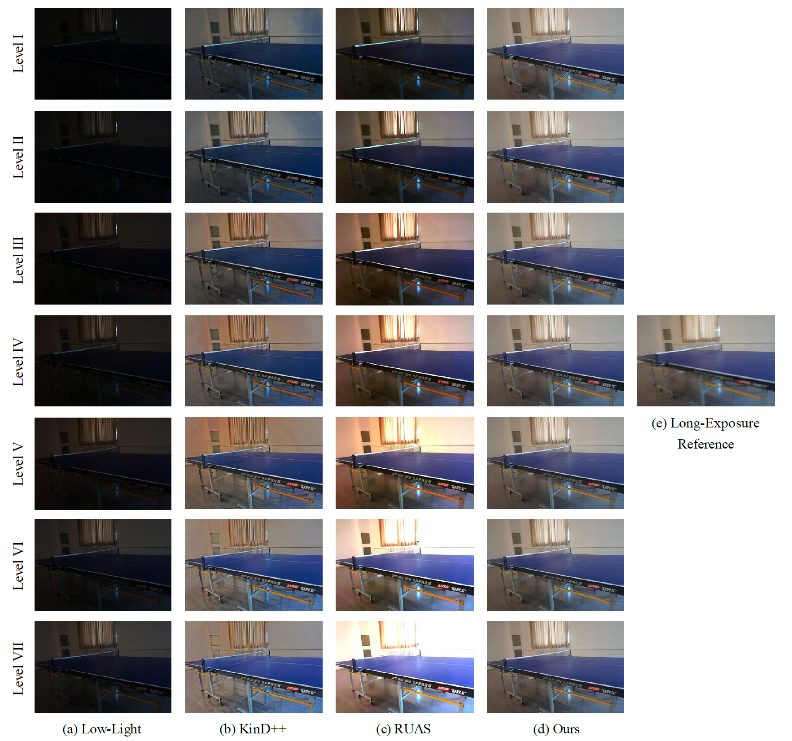
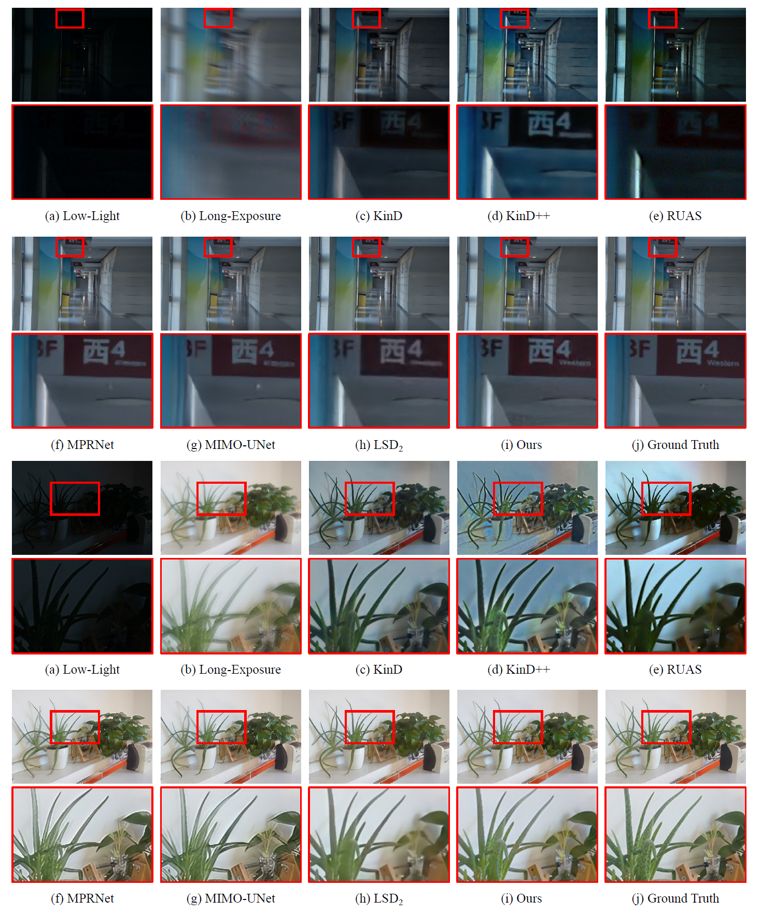
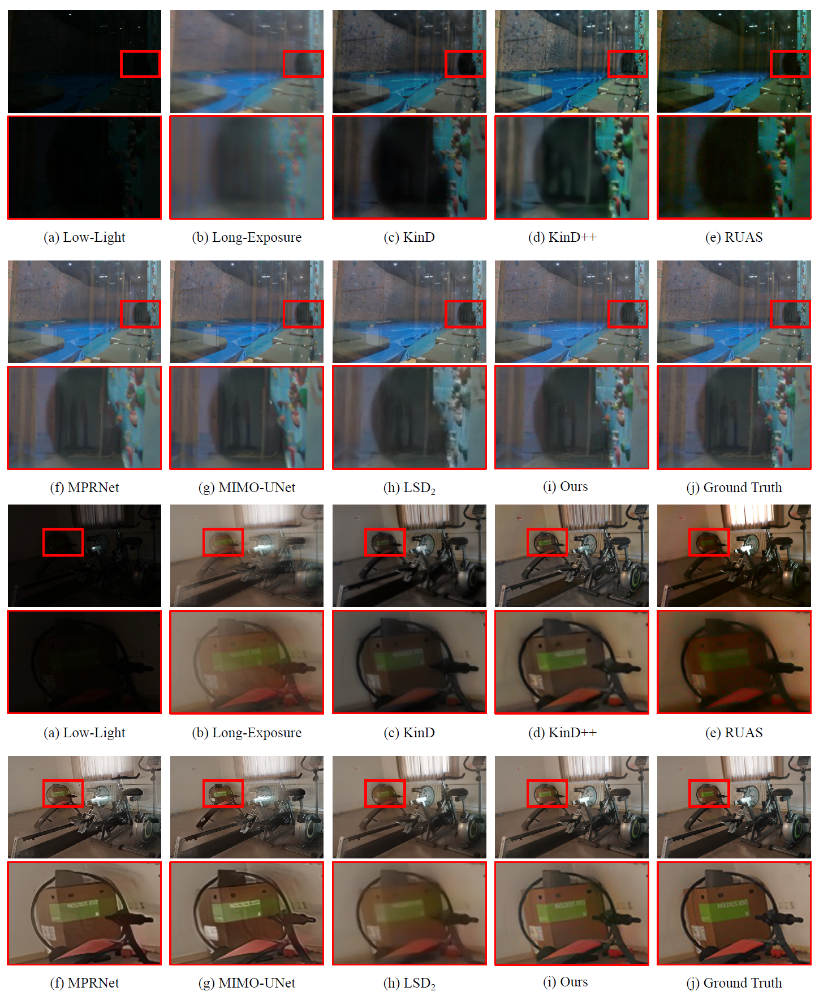
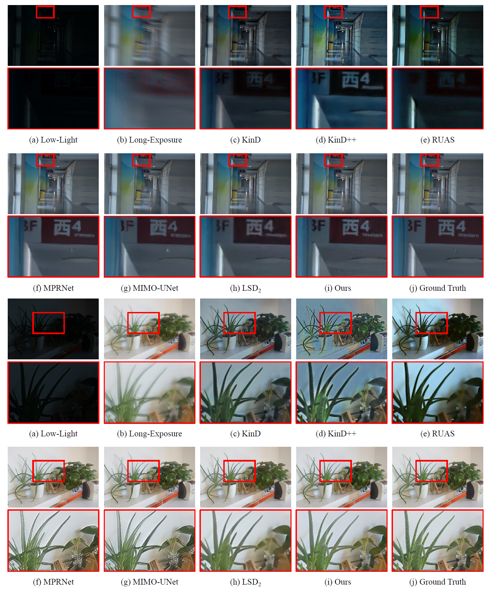
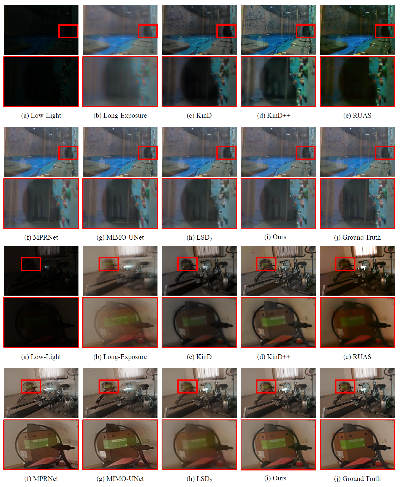

Low-Light Enhancement With Ambient Guidance via Deformable Band Regression
(Supplementary Material)
Haofeng Huang, Shuhong Zheng, Wenhan Yang, Ling-Yu Duan, Jiaying Liu
1. Implementation Details
We adopt the Adam Optimizer [1] with an initial learning rate of 1 × 10−4 and set hyperparameters at β1 = 0.9, β2 = 0.999 and the weight decay parameter equals to 1 × 10−4. We randomly crop 256 × 256 patches during training and adopt a two-stage training process. The model is first trained for 1.5 × 105 iterations. Then we finetune the model with an initial learning rate of 1 × 10−5 for 3 × 104 iterations. The batch size of both training stages is 8. The model is trained on 4 NVIDIA Titan Xp GPUs. The whole training process takes about 20 hours.
2. Implementation of the Compared Methods
The code links of all the compared methods are listed in Table 1. Thanks to the authors for sharing their codes, which is very helpful for our research work. For the single-image low-light enhancement methods [2, 3, 4, 5], we all use the officially released pretrained models on LOL dataset [2] for evaluation. For the single-image deblurring methods [6, 7], we retrain the models using the blurry/sharp image pairs in the LEC-LOL dataset. For the joint denoising and deblurring method [8], we follow the same training strategy of LECNet.
Table 1. Code links of the compared methods.
| Method | Code Link | |
|---|---|---|
| Retinex-Net [2] | https://github.com/weichen582/RetinexNet | |
| KinD [3] | https://github.com/zhangyhuaee/KinD | |
| KinD++ [4] | https://github.com/zhangyhuaee/KinD_plus | |
| RUAS [5] | https://github.com/KarelZhang/RUAS | |
| MPRNet [6] | https://github.com/swz30/MPRNet | |
| MIMO-UNet [7] | https://github.com/chosj95/MIMO-UNet | |
| LSD2 [8] | https://github.com/jannemus/LSD2 |
3. Results on Low-Light Inputs at Different Illumination Levels
In this section, we show the experimental results of using the same long-exposure reference to enhance the low-light images with different illuminance levels. The results can be seen in Fig. 1. We can observe that for the single-image low-light enhancement models [4, 5], the illuminance level of the enhanced image goes up as the input low-light image gradually becomes brighter. Thus, their predictions frequently fall into overexposure or underexposure when the illumination of their inputs is relatively high or low. However, there is no more ambiguity for our LECNet. The predictions from our LECNet all match the illumination of the given long-exposure reference. It also demonstrates that our LECNet obtains the illumination information entirely from the long-exposure image. Therefore, it is not disrupted by the illuminance level of the input low-light image.
Figure 1. Qualitative results of using 7 different low-light inputs with increasing illuminance levels (Level I: lowest illuminance level, Level VII: highest illuminance level). The results of single-image enhancement methods (KinD++ [4] and RUAS [5]) vary greatly when the input low-light image changes. By contrast, outputs of our LECNet are roughly the same, with the illuminations matching the long-exposure reference.
4. More Experimental Results
More visual results of our LECNet compared with other methods are referred to Figs. 2-4. The results of our LECNet are closer to the ground truth with clear details and consistent illumination levels.
 



Figure 2. More qualitative comparison with other methods. The top two rows show the results in the LEC-LOL-Syn dataset. The bottom two rows show the results in the LEC-LOL-Real dataset.
References
[1] Diederik P. Kingma and Jimmy Ba, “Adam: A method for stochastic optimization,” in ICLR, 2015.
[2] Chen Wei, Wenjing Wang, Wenhan Yang, and Jiaying Liu, “Deep retinex decomposition for low-light enhancement,” in BMVC, 2018.
[3] Yonghua Zhang, Jiawan Zhang, and Xiaojie Guo, “Kindling the darkness: A practical low-light image enhancer,” in ACM MM, 2019.
[4] Yonghua Zhang, Xiaojie Guo, Jiayi Ma, Wei Liu, and Jiawan Zhang, “Beyond brightening low-light images,” IJCV, vol. 129, no. 2, pp. 1013–1037, 2021.
[5] Risheng Liu, Long Ma, Jia'ao Zhang, Xin Fan, and Zhongxuan Luo, “Retinex-inspired unrolling with cooperative prior architecture search for low-light image enhancement,” in CVPR, 2021.
[6] Syed Waqas Zamir, Aditya Arora, Salman Khan, Munawar Hayat, Fahad Shahbaz Khan, Ming-Hsuan Yang, and Ling Shao, “Multi-stage progressive image restoration,” in CVPR, 2021.
[7] Sung-Jin Cho, Seo-Won Ji, Jun-Pyo Hong, Seung-Won Jung, and Sung-Jea Ko, “Rethinking coarse-to-fine approach in single image deblurring,” in ICCV, 2021.
[8] Janne Mustaniemi, Juho Kannala, Jiri Matas, Simo Sarkka, and Janne Heikkila, “LSD2 - joint denoising and deblurring of short and long exposure images with cnns,” in BMVC, 2020.